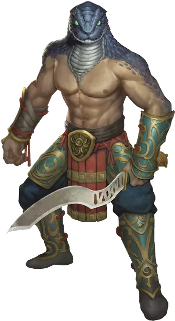

Юань-ти проклинатель (Вид 5)
Yuan-ti Malison (Type 5)
Средний Монстр (Перевертыш, Юань-ти), нейтрально-злой

Класс Доспеха 12
Хиты 66 (12к8 + 12)
Скорость 30 футов
| мод | спас | ||
|---|---|---|---|
| СИЛ | 16 | +3 | +3 |
| ЛОВ | 14 | +2 | +2 |
| ТЕЛ | 13 | +1 | +1 |
| мод | спас | ||
|---|---|---|---|
| ИНТ | 14 | +2 | +2 |
| МДР | 12 | +1 | +1 |
| ХАР | 16 | +3 | +3 |
Навыки Обман +5, Скрытность +4
Иммунитет к урону яд
Иммунитет к состояниям отравление
Чувства тёмное зрение 60 футов, пассивное Восприятие 11
Языки Общий, Бездны, Драконий
Опасность 3 (700 опыта)
Бонус мастерства +2
Среда обитания Болото, Лес, Пустыня
Особенности
Перевертыш. Юань-ти может действием превратиться в Среднюю змею или принять свой истинный облик. Во всех обликах его характеристики остаются теми же самыми. Все несомое и носимое им снаряжение не превращается. Он не меняет облик, если умирает.
Врождённое колдовство (только в облике юань-ти). Базовой характеристикой юань-ти является Харизма (Сл спасброска от заклинания 13). Он может накладывать следующие заклинания, не нуждаясь в материальных компонентах:
• Неограниченно: дружба с животными [animal friendship] (только змеи);
• 3/день: внушение [suggestion].
Сопротивление магии. Юань-ти совершает с преимуществом спасброски от заклинаний и прочих магических эффектов.
Вид проклинателя. Человеческая форма, покрытая чешуёй.
Черты. Вы можете изменять юань–ти, давая им одну или больше нижеследующих черт.
Вариант: Кислотная слизь. Бонусным действием юань–ти может покрыть свое тело кислотной слизью, которая держится 1 минуту. Существо, которое касается юань–ти, попадает по нему рукопашной атакой находясь в пределах 5 футов от него, или получает попадание атакой удушением, получает 5 (1к10) кислотного урона.
Вариант: Шкура хамелеона
Юань–ти обладает преимуществом на проверки Ловкости (Скрытность), делаемые, чтобы спрятаться.
Вариант:Сбрасываемая кожа (1/день). Этот юань–ти может сбрасывать свою кожу за бонусное действие, чтоб освободить себя от захвата, кандалов, или другого типа опутывания. Если юань–ти тратит 1 минуту на поедание своей сброшенной кожи, он восстанавливает количество хитов, равное половине его максимальных хитов.
Вариантные действия. Нижеследующие действия разрешены только для определенных видов юань–ти.
Вариант: Превращение в змея (Перезарядка 6). Юань–ти нацеливается на существо, которое может видеть на расстоянии не далее 60 фт. Цель должна выполнить спасбросок Мудрости или будет превращена в Крошечную ядовитую змею, как будто под действием заклинания превращение [polymorph]. Сл спасброска такая же, как у способности Врожденное колдовство юань–ти.
Вариант: Отвращение к змеям (Перезарядка 6). Юань–ти нацеливается на существо, которое может видеть на расстоянии не более 60 фт. от себя. Цель должна выполнить спасбросок Мудрости или будет чувствовать интенсивное желание избежать змей и змееподобных существ (включая юань–ти), как будто под действием заклинания
антипатия/симпатия [antipathy/sympathy]. Сл спасброска такая же, как у способности Врожденное колдовство юань–ти.
Вариант: Палки в змей (Перезарядка 6). Юань–ти превращает кучку хвороста, стрел, или похожих по размерам деревянных предметов в рой ядовитых змей [swarm of poisonous snakes]. Клубок действует как союзник юань–ти и подчиняется его голосовым командам. Клубок существует 1 минуту, после чего превращается в исходные материалы.
Действия
Мультиатака (Только в форме юань–ти). Юань–ти совершает две рукопашных атаки или две дальнобойных атаки.
Укус (только в змеиной форме). Рукопашная атака оружием: + 5 к попаданию, досягаемость 5 футов, одна цель. Попадание: 5 (1к4+3) колющего урона плюс 7 (2к6) урона ядом.
Скимитар (Только в форме юань–ти). Рукопашная атака оружием: + 5 к попаданию, досягаемость 5 футов, одна цель. Попадание: 6 (1к6+3) рубящего урона.
Длинный лук (Только в форме юань–ти). Дальнобойная атака оружием: + 4 к попаданию, досягаемость 150/600 фут, одна цель. Попадание: 6 (1к8+2) колющего урона.
Описание
Проклинатель — ужасная смесь человеческих и змеиных черт. Известны три типа проклинателей, хотя и другие типы также возможны. Проклинатели формируют среднюю касту в обществе юань-ти, и охотятся со стрелами, смазанными собственным ядом. Они используют магическую силу внушения, чтобы принудить врагов сдаться.
См. дополнительно статью: "Бестиарий: Юань-ти"